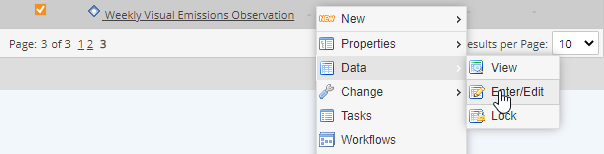
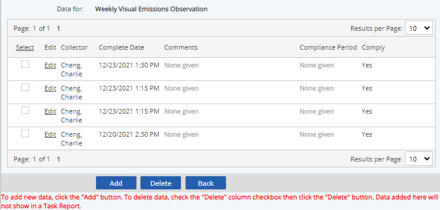
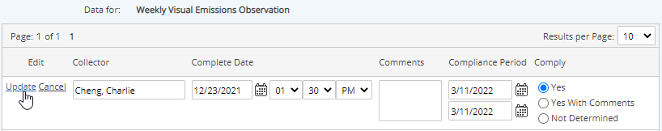

Data records may be entered for non-numeric requirements by two methods:
If the primary method of reporting compliance depends on Task Reports to certify completion of tasks on time, data should not be entered directly on the requirement, as new data entered manually will not appear on a task report. However, you can edit records originally created by task completion to correct errors that cannot be edited from the task instance. See Edit Non-Numeric Data.
To enter data manually for a non-numeric requirement:
Right click the requirement and choose Data > Enter/Edit from the popup menu.

Select Add. You may use either the link at the top, or the button at the bottom of the data results.

A new record is created with data entry fields available.

Complete the data entry fields for the new record:
Collector: User who collected or entered the data.
Complete Date/Time: Date completed; defaults to today’s date/time. Time may be specified to the minute. (See Date/Time Notes below.)
Comments: Use this field to add further notes (optional).
Compliance Period: Period for which the compliance status applies (start and end dates).
Comply: Choose the compliance status (Yes / Yes with Comments / Not Determined).